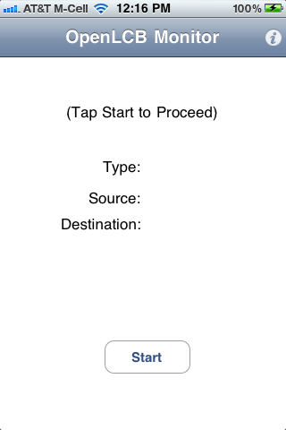
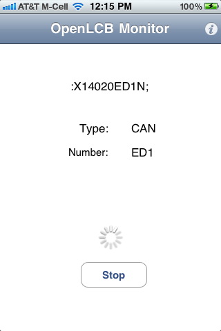
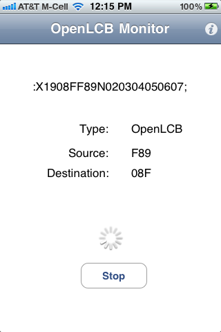

The OpenLCB Monitor app for iPhone® connects via Ethernet to your CAN-based OpenLCB, and displays the traffic as it happens.
You can get a free copy from the Apple App Store (once available in June 2011), or check out a copy from OpenLCB and build it for yourself.




Version 0.2 of the app displays the raw messages, along with limited decoding of the format and addresses. We're working on the next version, which will do complete decoding of OpenLCB version 0.3.
To get the most recent version for building your own local copy with XCode:
svn co https://openlcb.svn.sourceforge.net/svnroot/openlcb/trunk/prototypes/iOS/Monitor
To get the 0.2 version (most recent in the app store):
svn co https://openlcb.svn.sourceforge.net/svnroot/openlcb/tags/0.0.2.0/prototypes/iOS/Monitor
This web sites contains trademarks and copyrighted information. Please see the Licensing page.
This is SVN $Revision$ of